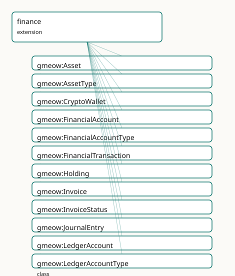

GMEOW Finance Module
- IRI: https://blackcatinformatics.ca/gmeow/slices/finance
- Tier: extension
Group: extensions
What This Slice Covers
This slice owns 108 terms and contributes 14 mapping or projection rows. Use it when its terms match the native fact you want to preserve; use the linkage tables to see how those facts leave GMEOW for consumer vocabularies.
Dependencies
gmeow:slices/accountsgmeow:slices/agreementsgmeow:slices/documentsgmeow:slices/eventsgmeow:slices/kernelgmeow:slices/observationsgmeow:slices/placesgmeow:slices/temporalgmeow:slices/trust
Consumers
- Accounts, transactions, REA double-entry over core
MonetaryAmount; FIBO alignment.
Local Map

Terms
Classes
| Term | Label | Definition |
|---|---|---|
gmeow:Asset |
Asset | A financial asset — a stock, bond, cryptocurrency, real estate holding, commodity, or other instrument of value. The thing that is held, not the holding itself... |
gmeow:AssetType |
Asset Type | The kind of a financial asset — a VALUE, never an Asset subclass. Open vocabulary. |
gmeow:CryptoWallet |
Crypto Wallet | A digital wallet that holds cryptocurrency assets. A subclass of FinancialAccount (it is a financial-existence account) with wallet-specific properties: addres... |
gmeow:FinancialAccount |
Financial Account | A financial account held by an agent with a financial institution — a bank account, credit card, investment account, or wallet. Distinct from OnlineAccount (so... |
gmeow:FinancialAccountType |
Financial Account Type | The kind of a financial account — a VALUE, never a FinancialAccount subclass. The set is open; a kind not among the seeds is a FRESH gmeow:FinancialAccountType... |
gmeow:FinancialTransaction |
Financial Transaction | A money-movement event — a payment, transfer, deposit, withdrawal, fee, interest, or refund. Reuses the Event/Participation substrate: payer, payee, and interm... |
gmeow:Holding |
Holding | A reified relator connecting an agent to a financial asset with a quantity and cost-basis. The thing that is held: agent × asset × quantity × cost-basis × opti... |
gmeow:Invoice |
Invoice | A billing document issued by a seller to a buyer, requesting payment for goods or services rendered. A subclass of Document. |
gmeow:InvoiceStatus |
Invoice Status | The status of an invoice — a VALUE, never a subclass. Open vocabulary. |
gmeow:JournalEntry |
Journal Entry | A balanced double-entry bookkeeping event: a temporal occurrence in which debits equal credits (per currency bucket). Composed of two or more Posting relators. |
gmeow:LedgerAccount |
Ledger Account | A book-keeping account in a double-entry ledger — an asset, liability, equity, revenue, or expense account. An InformationObject distinct from FinancialAccount... |
gmeow:LedgerAccountType |
Ledger Account Type | The kind of a ledger account — a VALUE, never a LedgerAccount subclass. The set is open; a kind not among the seeds is a FRESH LedgerAccountType individual car... |
gmeow:Order |
Order | A purchase order or sales order — an agreement between a buyer and a seller for the supply of goods or services at a stated price. A subclass of Agreement. |
gmeow:OrderStatus |
Order Status | The status of an order — a VALUE, never a subclass. Open vocabulary. |
gmeow:Payment |
Payment | A payment event — a financial transaction whose purpose is to discharge an obligation or transfer value. A thin subclass of FinancialTransaction distinguished... |
gmeow:PaymentMethod |
Payment Method | The method or instrument used to make a payment — a VALUE, never a subclass. Open vocabulary. |
gmeow:Posting |
Posting | A reified relator connecting a journal entry to a ledger account with a monetary amount and a posting direction (debit or credit). The atomic unit of double-en... |
gmeow:PostingDirection |
Posting Direction | The direction of a posting in double-entry bookkeeping — a VALUE, never a subclass. Only debit and credit are seeded; the vocabulary is closed in practice but... |
gmeow:TransactionStatus |
Transaction Status | The status of a financial transaction — a VALUE, never a subclass. Open vocabulary; seeds in Phase B. |
gmeow:TransactionType |
Transaction Type | The kind of a financial transaction — a VALUE, never a subclass. Open vocabulary; seeds in Phase B. |
gmeow:WalletScheme |
Wallet Scheme | The blockchain or cryptographic scheme of a wallet — a VALUE, never a subclass. Open vocabulary. |
Properties
| Term | Label | Definition |
|---|---|---|
gmeow:accountBalance |
account balance | The current balance of a financial account, expressed as a MonetaryAmount. Non-functional: a multi-currency account has several balances, and competing standpo... |
gmeow:accountCurrency |
account currency | The currency(ies) of a financial account, drawn from the open currency reference-frame vocabulary (gmeow:frameRealmCurrency). NON-FUNCTIONAL: a single account... |
gmeow:accountHolder |
account holder | Relates a financial account to the agent that holds it. Non-functional: a joint account has several co-equal holders. |
gmeow:accountNumber |
account number | The account number identifying the financial account at its institution. Not functional: different sources may report differing formats. |
gmeow:accountType |
account type | The kind of financial account — one of the open gmeow:FinancialAccountType values (bank, credit, investment, wallet). Functional: an account has one canonical... |
gmeow:assetIdentifier |
asset identifier | An identifier for the financial asset — FIGI, ISIN, ticker symbol, or other instrument identifier. Non-functional: different sources may report differing ident... |
gmeow:assetType |
asset type | The kind of financial asset — one of the open AssetType values (stock, bond, cryptocurrency, real estate, commodity). Functional: an asset has one canonical ty... |
gmeow:bic |
BIC | The Bank Identifier Code (ISO 9362, SWIFT code) of the institution holding the account. |
gmeow:holdingAgent |
holding agent | The agent that holds the asset. Functional: a holding is held by exactly one agent. |
gmeow:holdingAsset |
holding asset | The financial asset that is held. Functional: a holding is of exactly one asset. |
gmeow:holdingCostBasis |
holding cost basis | The cost basis of the holding — the original monetary amount paid to acquire the asset. Functional: a holding has one canonical cost basis (disputed values are... |
gmeow:holdingPeriod |
holding period | The time interval over which the holding is valid. Optional: omit for point-in-time holdings. |
gmeow:holdingQuantity |
holding quantity | The quantity of the asset held, as an xsd:decimal. Functional: a holding has exactly one quantity at a given point in time (competing standpoint-indexed quanti... |
gmeow:iban |
IBAN | The International Bank Account Number (ISO 13616) of a bank account. |
gmeow:invoiceAmount |
invoice amount | The total monetary amount requested by the invoice, expressed as a MonetaryAmount. Functional: an invoice has one canonical total amount. |
gmeow:invoiceDueDate |
invoice due date | The date and time by which payment is due (xsd:dateTime — DL-clean, never xsd:date). Non-functional: competing standpoint-indexed due dates coexist. |
gmeow:invoiceIssuer |
invoice issuer | The agent that issued the invoice. Non-functional: a jointly issued invoice has several co-equal issuers. |
gmeow:invoiceRecipient |
invoice recipient | The agent that is being billed. Non-functional: a jointly billed party has several recipients. |
gmeow:invoiceStatus |
invoice status | The status of an invoice, drawn from the open InvoiceStatus value vocabulary. Non-functional: an invoice may progress through several statuses over time. |
gmeow:journalEntryPostings |
journal entry postings | The postings that compose a journal entry. Non-functional: a journal entry has at least two postings (SHACL-enforced). |
gmeow:ledgerAccountCurrency |
ledger account currency | The currency(ies) in which the ledger account tracks balances. Non-functional: a single logical ledger account may track several currency buckets (multi-curren... |
gmeow:ledgerAccountHolder |
ledger account holder | The agent that holds the ledger account. Non-functional: a jointly maintained ledger account has several co-equal holders. |
gmeow:ledgerAccountType |
ledger account type | The kind of ledger account — one of the open LedgerAccountType values (asset, liability, equity, revenue, expense). Functional: a ledger account has one canoni... |
gmeow:orderAmount |
order amount | The total monetary amount of the order, expressed as a MonetaryAmount. Functional: an order has one canonical total amount. |
gmeow:orderBuyer |
order buyer | The agent placing the order. Non-functional: a joint purchase has several buyers. |
gmeow:orderSeller |
order seller | The agent fulfilling the order. Non-functional: a jointly fulfilled order has several sellers. |
gmeow:orderStatus |
order status | The status of an order, drawn from the open OrderStatus value vocabulary. Non-functional: an order may progress through several statuses. |
gmeow:paymentMethod |
payment method | The method of payment — cash, cheque, credit card, bank transfer, cryptocurrency, etc. Non-functional: a single payment may involve several methods (e.g. split... |
gmeow:postingAccount |
posting account | The ledger account this posting affects. Functional: a posting affects exactly one ledger account. |
gmeow:postingAmount |
posting amount | The monetary amount of this posting, expressed as a MonetaryAmount with explicit currency frame. Functional: a posting has exactly one amount. |
gmeow:postingDirection |
posting direction | The direction of this posting — debit or credit. Functional: a posting is exactly one direction. |
gmeow:postingJournalEntry |
posting journal entry | The journal entry this posting belongs to. Functional: a posting belongs to exactly one journal entry. |
gmeow:transactionAmount |
transaction amount | The monetary amount of a financial transaction, expressed as a MonetaryAmount. Functional: a single transaction occurrence has one canonical amount (disputed a... |
gmeow:transactionStatus |
transaction status | The status(es) of a financial transaction, drawn from the open TransactionStatus value vocabulary. Non-functional: a transaction may progress through several s... |
gmeow:transactionType |
transaction type | The kind(s) of a financial transaction, drawn from the open TransactionType value vocabulary. Non-functional: a transaction may carry several types, and compet... |
gmeow:walletAddress |
wallet address | A public address of the crypto wallet. Non-functional: a single wallet may have multiple addresses (e.g. HD wallet derivation paths). |
gmeow:walletKey |
wallet key | The cryptographic key that controls the wallet. Non-functional: a wallet may be controlled by several keys (multi-sig) or the key may rotate over time. |
gmeow:walletScheme |
wallet scheme | The blockchain scheme of the wallet — Bitcoin, Ethereum, Solana, Monero, etc. Functional: a wallet operates on exactly one scheme (a multi-scheme container is... |
Individuals
| Term | Label | Definition |
|---|---|---|
gmeow:accountTypeBank |
bank account | A deposit or chequing account at a bank or credit union. |
gmeow:accountTypeCredit |
credit account | A credit card or line-of-credit account. |
gmeow:accountTypeInvestment |
investment account | A brokerage, retirement, or other investment holdings account. |
gmeow:accountTypeWallet |
wallet | A digital wallet — fiat or crypto — held by an agent. |
gmeow:assetTypeBond |
bond | A fixed-income debt instrument. |
gmeow:assetTypeCommodity |
commodity | A basic good or raw material traded on a market (gold, oil, wheat, etc.). |
gmeow:assetTypeCryptocurrency |
cryptocurrency | A digital currency operating on a blockchain or distributed ledger. |
gmeow:assetTypeRealEstate |
real estate | A real property asset — land, buildings, or improvements. |
gmeow:assetTypeStock |
stock | A share of ownership in a corporation. |
gmeow:invoiceStatusCancelled |
cancelled | An invoice that has been cancelled. Retained with displayable false, never deleted (Principle 10). |
gmeow:invoiceStatusDraft |
draft | An invoice that has been created but not yet sent. |
gmeow:invoiceStatusOverdue |
overdue | An invoice whose due date has passed without payment. |
gmeow:invoiceStatusPaid |
paid | An invoice that has been paid in full. |
gmeow:invoiceStatusSent |
sent | An invoice that has been sent to the recipient. |
gmeow:ledgerAccountTypeAsset |
asset | An asset account — resources owned by the entity (cash, receivables, inventory, equipment). |
gmeow:ledgerAccountTypeEquity |
equity | An equity account — the residual interest in the assets after deducting liabilities (owner capital, retained earnings). |
gmeow:ledgerAccountTypeExpense |
expense | An expense account — costs incurred in the process of generating revenue (salaries, rent, utilities, supplies). |
gmeow:ledgerAccountTypeLiability |
liability | A liability account — obligations owed by the entity (payables, loans, accrued expenses). |
gmeow:ledgerAccountTypeRevenue |
revenue | A revenue account — income generated from normal business operations (sales, fees, interest income). |
gmeow:orderStatusCancelled |
cancelled | An order that has been cancelled. Retained with displayable false, never deleted (Principle 10). |
gmeow:orderStatusConfirmed |
confirmed | An order that has been confirmed by the seller. |
gmeow:orderStatusDelivered |
delivered | An order whose goods have been delivered. |
gmeow:orderStatusPending |
pending | An order that has been placed but not yet confirmed. |
gmeow:orderStatusShipped |
shipped | An order whose goods have been shipped. |
gmeow:paymentMethodBankTransfer |
bank transfer | Payment made by bank transfer or wire. |
gmeow:paymentMethodCash |
cash | Payment made in physical currency. |
gmeow:paymentMethodCheque |
cheque | Payment made by cheque. |
gmeow:paymentMethodCreditCard |
credit card | Payment made by credit card. |
gmeow:paymentMethodCrypto |
cryptocurrency | Payment made in cryptocurrency. |
gmeow:postingDirectionCredit |
credit | A credit posting — an entry on the right side of a ledger account. |
gmeow:postingDirectionDebit |
debit | A debit posting — an entry on the left side of a ledger account. |
gmeow:roleIntermediary |
intermediary | An intermediary agent in a financial transaction — a bank, payment processor, or clearing house. |
gmeow:rolePayee |
payee | The agent that receives money in a financial transaction. |
gmeow:rolePayer |
payer | The agent that sends money in a financial transaction. |
gmeow:transactionStatusCompleted |
completed | A transaction that has been fully processed and settled. |
gmeow:transactionStatusFailed |
failed | A transaction that failed to complete. |
gmeow:transactionStatusPending |
pending | A transaction that has been initiated but not yet settled. |
gmeow:transactionStatusReversed |
reversed | A transaction that has been reversed or voided. The original transaction record is retained with displayable false (Principle 10); the reversal is a separate e... |
gmeow:transactionTypeDeposit |
deposit | A deposit transaction — money added to an account. |
gmeow:transactionTypeFee |
fee | A fee transaction — a charge levied by a financial institution or service provider. |
gmeow:transactionTypeInterest |
interest | An interest transaction — interest earned or charged on an account balance. |
gmeow:transactionTypePayment |
payment | A payment transaction — money sent from one agent to another. |
gmeow:transactionTypeRefund |
refund | A refund transaction — money returned to the payer. |
gmeow:transactionTypeTransfer |
transfer | A transfer transaction — money moved between accounts held by the same agent. |
gmeow:transactionTypeWithdrawal |
withdrawal | A withdrawal transaction — money removed from an account. |
gmeow:walletSchemeBTC |
Bitcoin | The Bitcoin blockchain scheme. |
gmeow:walletSchemeETH |
Ethereum | The Ethereum blockchain scheme. |
gmeow:walletSchemeSOL |
Solana | The Solana blockchain scheme. |
gmeow:walletSchemeXMR |
Monero | The Monero blockchain scheme. |
Linkages
- Rows: 14
- Projection profiles: -
- External vocabularies:
fibo-fbc-fi-fi,fibo-fnd-acc-ae,fibo-fnd-pas-ps,schema
| Source | Kind | Profile | Predicate/Relation | Target | Evidence |
|---|---|---|---|---|---|
gmeow:Asset |
equivalence | - |
skos:closeMatch | fibo-fbc-fi-fi:FinancialInstrument | gmeow-fibo.sssom.tsv; gmeow:eqFibo008; confidence 0.8 |
gmeow:CryptoWallet |
equivalence | - |
skos:closeMatch | schema:BankAccount | gmeow-schema-org-finance.sssom.tsv; gmeow:eqSchemaOrgFin012; confidence 0.6 |
gmeow:FinancialAccount |
equivalence | - |
skos:closeMatch | schema:BankAccount | gmeow-schema-org-finance.sssom.tsv; gmeow:eqSchemaOrgFin001; confidence 0.8 |
gmeow:FinancialAccount |
equivalence | - |
skos:relatedMatch | schema:DepositAccount | gmeow-schema-org-finance.sssom.tsv; gmeow:eqSchemaOrgFin002; confidence 0.7 |
gmeow:FinancialTransaction |
equivalence | - |
skos:closeMatch | fibo-fnd-pas-ps:TransactionEvent | gmeow-fibo.sssom.tsv; gmeow:eqFibo005; confidence 0.75 |
gmeow:FinancialTransaction |
equivalence | - |
skos:closeMatch | schema:MoneyTransfer | gmeow-schema-org-finance.sssom.tsv; gmeow:eqSchemaOrgFin008; confidence 0.75 |
gmeow:Holding |
equivalence | - |
skos:closeMatch | fibo-fbc-fi-fi:Holding | gmeow-fibo.sssom.tsv; gmeow:eqFibo009; confidence 0.8 |
gmeow:Invoice |
equivalence | - |
skos:closeMatch | schema:Invoice | gmeow-schema-org-finance.sssom.tsv; gmeow:eqSchemaOrgFin010; confidence 0.9 |
gmeow:LedgerAccount |
equivalence | - |
skos:closeMatch | fibo-fnd-acc-ae:Account | gmeow-fibo.sssom.tsv; gmeow:eqFibo006; confidence 0.8 |
gmeow:Order |
equivalence | - |
skos:closeMatch | schema:Order | gmeow-schema-org-finance.sssom.tsv; gmeow:eqSchemaOrgFin011; confidence 0.85 |
gmeow:Payment |
equivalence | - |
skos:closeMatch | schema:Payment | gmeow-schema-org-finance.sssom.tsv; gmeow:eqSchemaOrgFin009; confidence 0.85 |
gmeow:Posting |
equivalence | - |
skos:closeMatch | fibo-fnd-acc-ae:BookEntry | gmeow-fibo.sssom.tsv; gmeow:eqFibo007; confidence 0.75 |
gmeow:accountBalance |
equivalence | - |
skos:closeMatch | schema:accountBalance | gmeow-schema-org-finance.sssom.tsv; gmeow:eqSchemaOrgFin007; confidence 0.85 |
gmeow:iban |
equivalence | - |
skos:exactMatch | schema:iban | gmeow-schema-org-finance.sssom.tsv; gmeow:eqSchemaOrgFin006; confidence 0.95 |
Guide
GMEOW Finance Mapping
Scope
The GMEOW financial slice models personal and SMB financial existence: accounts,
monetary amounts, transactions, ledgers, invoices, orders, asset holdings, and
crypto wallets. It is grounded in the existing GMEOW substrate (Event,
Participation, Agreement, Rights, Trust) and aligned to heavy standards
(FIBO, ISO 20022, schema.org, FIGI, OFX) by reference, never imported
(Principle 5).
This document covers all phases (A–D) of.
Design principles
- A transaction is a reified
Event(REA pattern): money movement withAgentparticipants in roles (payer / payee / intermediary). ReusesEvent/Participation; never re-minted. - Money is
MonetaryAmount= amount (xsd:decimal) + currency (ReferenceFrameindividual). ISO 4217 codes are an open value vocabulary of individuals, never subclasses. DL-clean. - Double-entry as structure:
LedgerAccount,JournalEntry⊑Event,Posting⊑gufo:Relator(account × amount × debit/credit). Balance (Σ debits = Σ credits) enforced by SHACL, not OWL. - Loans are
Agreements; invoices areDocuments; ownership isrights; banks areOrganizations; wallets holdtrustkeys — reuse, don't duplicate. - Sensitive: P9/P10 + provenance. Reversed/voided transactions are
displayable false, retained as audit trail, never deleted; disputed amounts coexistaccordingTo; every figure carriesconfidence/wasAttributedTo. - Flat-first, reify on demand: a flat
accountBalanceonFinancialAccountcovers the 80% case; promote to aHoldingrelator when cost-basis, period, or provenance matters.
gUFO grounding
Reuse map
| Finance concept | Reuses GMEOW term | Module |
|---|---|---|
| Transaction | Event + Participation |
events |
| Loan | Agreement + hasParty |
agreements |
| Invoice | Document |
documents |
| Bank / broker | Organization |
organization |
| Crypto wallet keys | CryptographicKey + holdsKey |
trust |
| Asset ownership | RightsStatement / Copyright |
rights |
| Temporal scope | TimeInterval + four clocks |
temporal |
| Standpoint dispute | accordingTo + confidence |
standpoint |
| Suppression | displayable |
provenance |
External alignment
FIBO
schema.org financial extension
ISO 4217
Each GMEOW ISO 4217 currency ReferenceFrame individual (e.g. referenceFrameUSD)
is skos:exactMatch to the corresponding FIBO ISO4217-CurrencyCodes individual
(e.g. fibo-iso4217:USD). Non-ISO assets (e.g. BTC/ETH) are mapped separately.
Projection lossiness
| Target | What drops | What survives |
|---|---|---|
| schema.org | Currency as ReferenceFrame → string code; participant roles flattened; ledger detail lost | Amount, account, invoice, order, payment |
| OFX / FDX | Standpoint, confidence, provenance; multi-currency detail | Account balances, transactions, holdings |
| ISO 20022 camt.053 | Standpoint metadata; GMEOW-specific relator structure | Bank statement accounts, entries, balances |
| Ledger-CLI / GnuCash | Currency frames, provenance, standpoint | Double-entry postings, accounts, amounts |
SHACL validation
| Shape | What it enforces |
|---|---|
MonetaryAmountHasCurrencyShape |
Every MonetaryAmount has exactly one currency |
MonetaryAmountHasValueShape |
Every MonetaryAmount has exactly one monetaryValue |
FinancialAccountShape |
Every FinancialAccount has ≥1 holder, ≤1 type, currencies are ReferenceFrames |
TransactionHasPartiesShape |
Every FinancialTransaction has ≥1 participant |
LedgerAccountShape |
Every LedgerAccount has ≥1 holder, exactly 1 type |
JournalEntryHasPostingsShape |
Every JournalEntry has ≥2 postings |
PostingShape |
Every Posting has exactly 1 journal entry, account, amount, direction |
InvoiceShape |
Every Invoice has exactly 1 amount, ≥1 issuer, ≥1 recipient |
OrderShape |
Every Order has exactly 1 amount, ≥1 buyer, ≥1 seller |
HoldingShape |
Every Holding has exactly 1 agent, 1 asset, 1 quantity |
CryptoWalletShape |
Every CryptoWallet has exactly 1 scheme |
Build order (phased)
- Phase A (merged):
FinancialAccount,MonetaryAmount, currency vocabulary, basic mappings, SHACL, tests. - Phase B (this PR):
FinancialTransaction,LedgerAccount,JournalEntry,Posting, double-entry SHACL, transaction/ledger/posting mappings. - Phase C (this PR):
Payment,Invoice(⊑Document),Order,Asset,Holding(⊑gufo:Relator), invoice/order/asset/holding mappings. - Phase D (this PR):
CryptoWallet, schema.org / OFX / ISO 20022 / ledger-CLI projections, crypto mappings.
Constitution principles
Principles 1 (SOTA), 4 (one canonical source), 5 (maximal bridging by reference),
7 (verified by construction), 9 (open value vocabularies), 10 (suppression, never
erasure), 11 (frame-relativity — currency as explicit ReferenceFrame).
References (SOTA)
- FIBO (Financial Industry Business Ontology, EDM Council / OMG) — Accounting/CurrencyAmount, ISO4217-CurrencyCodes, LoanOrCredit, FinancialInstruments. https://spec.edmcouncil.org/fibo/
- schema.org financial extension (FIBO-derived). https://schema.org/docs/financial.html
- ISO 4217 (currency), ISO 20022 (camt.053 / pain / pacs), FIGI (instrument id), OFX / FDX (personal-finance interchange), REA ontology (Resources-Events-Agents accounting).